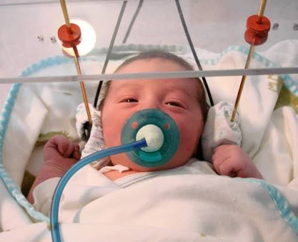

Procedimiento de Succión de Amplitud Elevada (HASP)
Estudiar a los bebés puede ser difícil porque todavía no pueden expresar con palabras lo que piensan, sienten o comprenden. Por esta razón, la Psicología del Desarrollo utiliza métodos experimentales que permiten estudiar sus capacidades a partir de conductas observables, como la succión, el giro de la cabeza, el tiempo que permanecen mirando un estímulo, etc.
Los métodos revisados permiten estudiar principalmente la percepción temprana del habla, la atención, la discriminación de estímulos, la comprensión del lenguaje y algunos conocimientos sobre el mundo físico.
1. Procedimiento de Succión de Amplitud Elevada (HASP)
¿En qué consiste? ¿Cómo se aplica?
Según Barón Birchenall, Müller y Galindo (2014), el Procedimiento de Succión de Amplitud Elevada o conocido como HASP por sus siglas en inglés (High-Amplitude Sucking Procedure), es un método experimental utilizado para estudiar cómo los bebés perciben y discriminan diferentes estímulos auditivos, especialmente sonidos del habla. Se utiliza principalmente con bebés desde el nacimiento hasta los 4 meses para estudiar su capacidad de discriminar pequeños fragmentos de material auditivo.
Para aplicarlo, el bebé se coloca en una cuna ligeramente inclinada y se le da un chupete conectado a un computador mediante un transductor de presión. El computador registra la frecuencia con la que el bebé succiona y permite controlar los estímulos auditivos que se presentan mediante un altoparlante.
Primero se establece una línea de base, midiendo la frecuencia de succión sin presentar ningún estímulo. Después comienza la fase de familiarización, en la que se presenta repetidamente un mismo estímulo. A medida que el bebé se habitúa, “la frecuencia de succión comienza a disminuir”. Cuando esta disminución alcanza un criterio determinado, generalmente alrededor de una tercera parte, comienza la fase de prueba.
En esta fase se presenta un estímulo novedoso al grupo experimental, mientras que al grupo control se le presenta nuevamente el estímulo conocido. Si la frecuencia de succión aumenta ante el estímulo novedoso, se interpreta como evidencia de que el bebé “ha discriminado los estímulos presentados”.
.jpg)
¿Qué mide o qué permite estudiar?
El HASP permite estudiar principalmente la capacidad de los bebés para discriminar estímulos auditivos, especialmente pequeños fragmentos de material auditivo. También permite observar cambios en la respuesta de succión cuando el bebé pasa de un estímulo familiar a uno novedoso.
En otras palabras, el método permite saber si un bebé percibe una diferencia entre dos estímulos auditivos, aunque todavía no pueda hablar ni expresar verbalmente lo que ha percibido.
Video o recurso audiovisual
Este video muestra de manera práctica cómo se utilizan diferentes procedimientos experimentales para estudiar la percepción del habla en bebés, incluyendo el procedimiento de succión de amplitud elevada (HASP).
Lectura en español
Este artículo científico presenta diferentes investigaciones sobre la percepción del habla durante el primer año de vida. Entre los métodos mencionados se encuentra el paradigma de succión de elevada amplitud (HASP), utilizado para estudiar la capacidad de los bebés para discriminar diferentes estímulos del habla.
Lectura en inglés
Este artículo estudia cómo los bebés de dos meses procesan los sonidos del habla cuando estos son producidos por diferentes personas. Para realizar el estudio se utilizó una versión modificada del procedimiento de succión de amplitud elevada (HAS), permitiendo analizar la capacidad de los bebés para detectar cambios fonéticos.
Página web recomendada
Es una página que reúne diferentes recursos académicos relacionados con la fonética y la percepción del habla. Entre ellos incluye materiales sobre procedimientos experimentales utilizados para estudiar la percepción del habla en bebés, como el HASP.
↗ Presiona para ingresar a la fuente
Actividad lúdica: Crucigrama
Completa el crucigrama utilizando las pistas relacionadas con el procedimiento de succión de amplitud elevada. Haz clic en una pista para llevar el cursor a la primera casilla de su respuesta.
Horizontales
Verticales
Dato llamativo

¡El HASP ha permitido estudiar lo que los bebés pueden reconocer incluso a los pocos días de haber nacido!
Una de las cosas más sorprendentes de este método es que no es necesario esperar a que el bebé tenga varios meses para utilizarlo. Investigaciones han aplicado el Procedimiento de Succión de Amplitud Elevada con recién nacidos de apenas 3 días de vida. En uno de estos estudios, los bebés franceses escucharon palabras japonesas y, mediante sus cambios en la succión, se pudo estudiar si diferenciaban palabras de dos y tres sílabas, e incluso diferencias relacionadas con las moras, una unidad rítmica utilizada en japonés.
Lo llamativo es que el bebé todavía no habla ni puede responder verbalmente a los investigadores, pero su patrón de succión permite obtener información sobre cómo responde ante diferentes estímulos del lenguaje. Esto demuestra por qué el HASP ha sido una herramienta tan útil para investigar las capacidades auditivas y lingüísticas durante los primeros días de vida.
Fuentes consultadas
-
Barón Birchenall, L., Galindo, Ó., & Müller, O. (2014). La percepción del habla durante el primer año de vida. Revista Latinoamericana de Psicología, 46(1), 12–23.
Consultar artículo completo -
Jusczyk, P. W., Pisoni, D. B., & Mullennix, J. (1992). Some consequences of stimulus variability on speech processing by 2-month-old infants. Cognition, 43(3), 253–291.
Consultar artículo en inglés -
International Phonetic Association. (s. f.). Links to phonetics resources.
Consultar página web -
Bertoncini, J., Floccia, C., Nazzi, T., & Mehler, J. (1995). Morae and Syllables: Rhythmical Basis of Speech Representations in Neonates. Language and Speech, 38(4), 311–329.